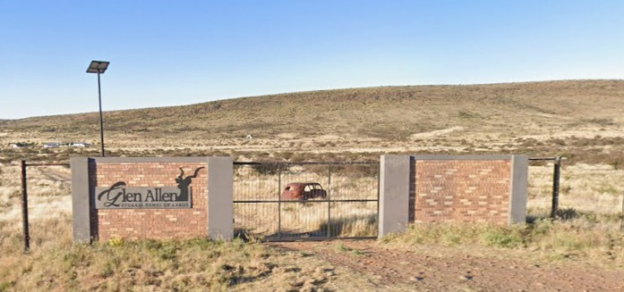

Ons trou!
Saterdag, 14 November 2026
Aankoms
vanaf
15:30
Seremonie begin stiptelik
16:30
Die seremonie begin om 16:30
Die venue
Glen Allen
Stukkie Hemel op Aarde
Naby Prieska, Noord-Kaap
Soek hierdie hek

Wat om saam te bring
Die Kroeg by die venue is slegs kontant — geen kaartmasjiene nie, bring dus kontant.
Ligging